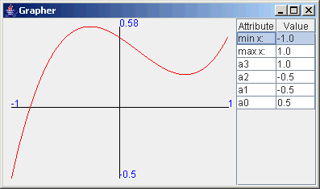

|
|||||||||
| PREV PACKAGE NEXT PACKAGE | FRAMES NO FRAMES | ||||||||
IFunction,
IQuadraticFunction,
or IPolynomialFunction.
See:
Description
| Interface Summary | |
|---|---|
| IFunction | Objects implementing the IFunction interface represent a
mathematical function, say f(x). |
| IPolynomialFunction | A polynomial function, f(x), has a number of terms, each of the form aixi. |
| IQuadraticFunction | A quadratic function, f(x), has the form ax2 + bx1 + cx0, or more simply, ax2 + bx + c where the coefficients a, b, and c are real numbers. |
| Class Summary | |
|---|---|
| GrapherGUI | GrapherGUI provides a user interface for graphing
mathematical functions when supplied with an instance of a student-written
class implementing one of the three interfaces IFunction,
IQuadraticFunction and IPolynomialFunction. |
| SamplePolynomialFunction | A sample class implementing the IPolynomialFunction interface. |
The grapher package provides a graphical user interface to graph mathematical functions which
implement one of three Java interfaces: IFunction,
IQuadraticFunction,
or IPolynomialFunction.
The interface looks like this:

A typical main method using Grapher is:
import becker.xtras.grapher.*;
public class Main extends Object
{ public static void main(String[] args)
{ IFunction qf = new MyFunction(2, 0, -1);
GrapherGUI g = new GrapherGUI(qf);
}
}
where MyFunction is a student-written class implementing one
of the supported interfaces. Substituting SamplePolynomialFunction for
MyFunction and IPolynomialFunction for IFunction
in the above code will yield a working demonstration program.
This program uses the Model-View-Controller pattern for classes implementing
IQuadraticFunction and IPolynomialFunction. The classes implementing
these interfaces form the model part of the Model-View-Controller pattern.
They must arrange to update the views each time the model's state (that is, one of
its instance variables) changes. This can be done easily with code such as the following:
import becker.util.IView;
import becker.util.ViewList;
public class Function implements IPolynomialFunction
{
private ViewList views = new ViewList();
...
public void stateChangingMethod()
{ ...
this.views.updateViews();
}
public void addView(IView aView)
{ this.views.addView(aView);
}
}
Classes implementing the IFunction interface should not have state that changes
and are therefore exempt from the above requirements.
|
|||||||||
| PREV PACKAGE NEXT PACKAGE | FRAMES NO FRAMES | ||||||||